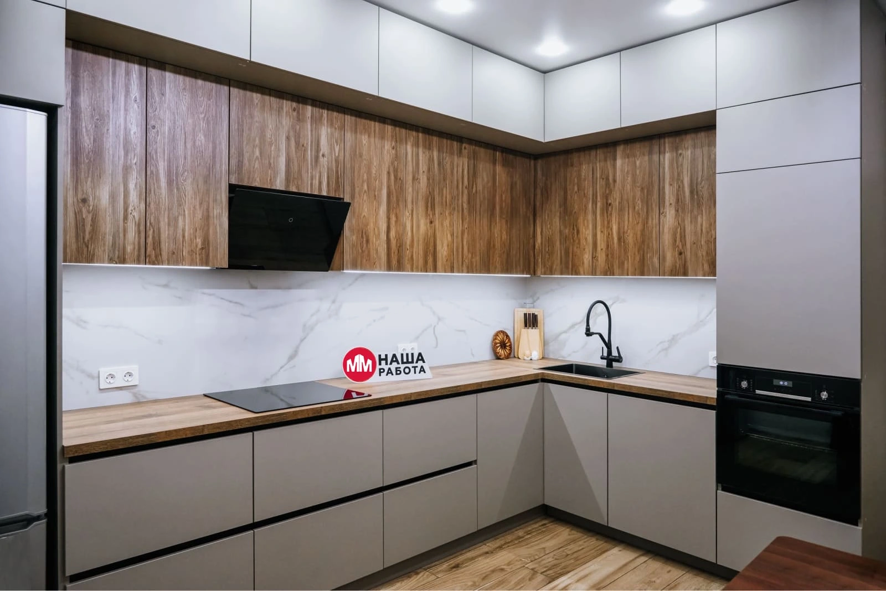

КУХНИ НА ЗАКАЗВаша кухня.
Ваша кухня.
Ваше исполнение.
Изготавливаем кухни по индивидуальному проекту в Тамбове и области. Продумываем планировку, наполнение и отделку.
Обсудить мой проект
МАТЕРИАЛЫ И РЕШЕНИЯКаждой кухне
Каждой кухне
свой характер.
Современные фасады или неоклассика, остров или компактная рабочая зона. Обсудим размеры и пожелания, чтобы подобрать решение для вашего помещения.
Рассчитать мой проект